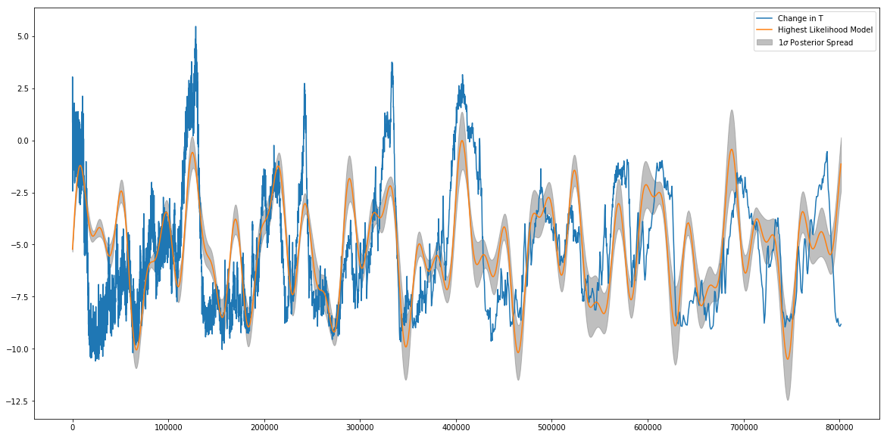
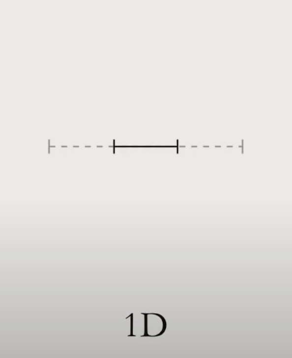
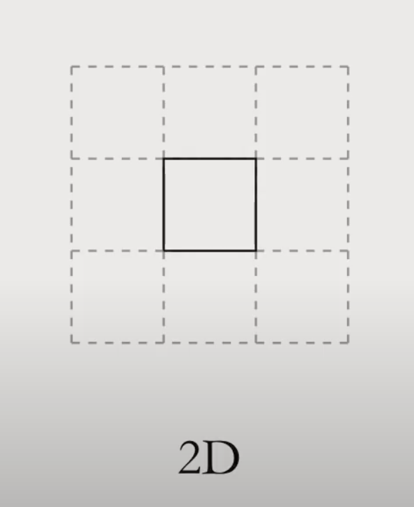
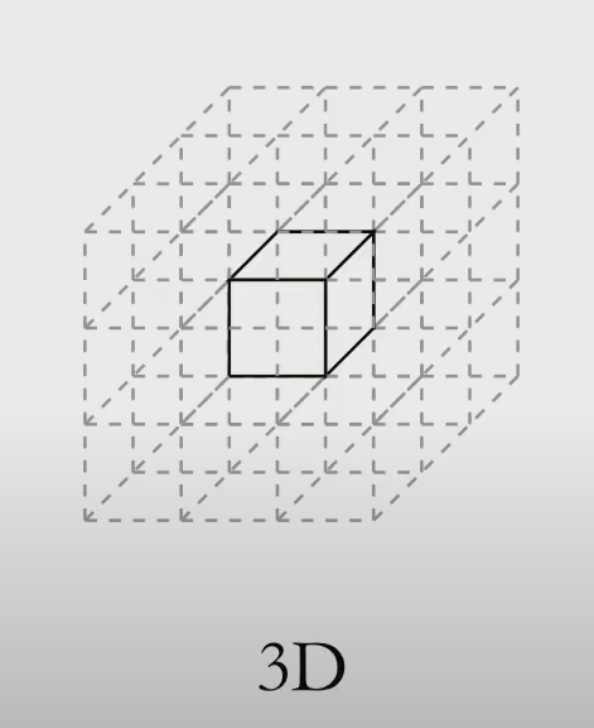
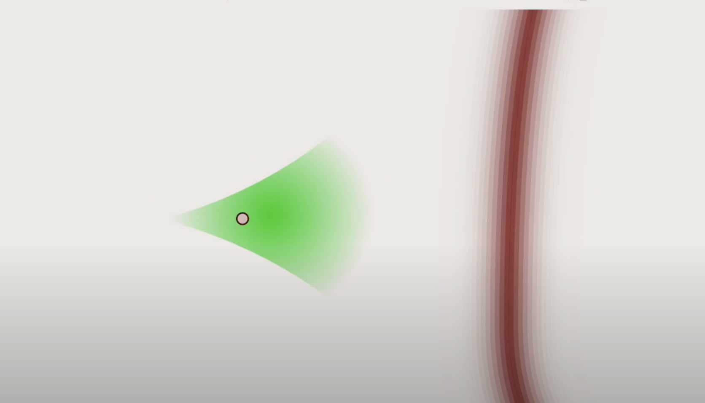

MCMC Tutorial

Bayesian Inference
Bayesian inference provides a principled way to update our beliefs in light of data. It does so by combining a prior distribution \(\pi(q)\), which encodes what we already believe, with a likelihood \(\pi(D \mid q)\), which represents how the data relate to the parameters. Together, they form the posterior:
\(\pi(q \mid D) \propto \pi(D \mid q) \, \pi(q)\)
This posterior captures everything we know about the parameters after observing data. As the speaker in the referenced talk put it:
“These two things together with some data we get a posterior distribution and the posterior distribution captures all the information in our system. It’s a wonderfully kind of elegant theoretical property…”
But here’s the catch:
“…the reality is that we can’t work with a posterior distribution. A high-dimensional probability distribution is a kind of meaningless thing. It’s this abstraction that we can’t interact with.”
So, how do we extract useful insights?
From Posteriors to Expectations
In Bayesian inference, once we have our model and some data, the goal is to compute the posterior distribution, which combines our prior beliefs and the information from the data. This is usually written as:
\(\pi(q \mid D) \propto \pi(D \mid q) \pi(q)\)
Here, q represents all the unknown quantities we are trying to learn. These could be parameters like growth rates, optimal temperatures, or bite rate. The space of all possible values that q could take is what we call the parameter space. In simple models, this space might be one or two dimensional. In more realistic models—like those describing mosquito traits and parasite development—it can easily become 10, 20, or even hundreds of dimensions.
Now, suppose we want to estimate something from this posterior—say, the average value of one trait or the probability that it exceeds a certain threshold. In Bayesian statistics, this means we need to compute expectations, which take the form:
\(\mathbb{E}_{\pi}[f] = \int dq \, \pi(q \mid D) f(q)\)
This is the central computation in Bayesian inference. But computing such integrals extremely hard in high dimensions because it does not just evaluate the integrand, it aggregates it over volumns.
Imagine covering a 1D space (a line) with intervals.

In 2D, covering a square requires 9 tiles—one in the center and 8 around.

In 3D, a cube is surrounded by 26 others.

As dimensions increase, this “surrounding” effect grows rapidly. The volume of the space explodes outward, and the small region near the peak of our distribution (where we expect to learn the most) becomes a tiny fraction of the whole space.
This is a core problem. Even if we know where the posterior is highest (its “peak”), most of the probability mass lies in a weird, thin shell around it, not directly at the center. And trying to integrate over this complex shape with regular grid-based methods (like the ones we learn in calculus) just isn’t feasible when the dimension goes beyond 3 or 4.
So, to actually compute expectations in high-dimensional parameter spaces, we need smarter tools. This is where Monte Carlo method step in, and eventually, Markov Chain Monte Carlo come into play.
Monte Carlo: Sampling Instead of Solving
So far, we’ve learned that Bayesian inference boils down to computing an expectation: an integral over a high-dimensional parameter space. But as we saw, volume in high dimensions behaves oddly—making that integral nearly impossible to solve with traditional methods like grid search or numeric quadrature. The regions that matter most are small and hard to find.
This is where Monte Carlo methods step in. Rather than trying to compute the integral directly, Monte Carlo flips the problem: it draws random samples from the posterior distribution, and then approximates the expectation by averaging over those samples.
Think of it like this: imagine trying to understand how students perform in a large university, but instead of surveying every single student, you randomly sample students from the most populated classes—because that’s where most of the action happens. Similarly, Monte Carlo sampling draws points from areas where the posterior distribution places the most weight. These areas, known as the typical set, are where most of the useful information lives. So instead of wasting effort sampling from the outskirts, Monte Carlo methods focus where it counts.
Mathematically, if we draw N independent samples \(q_1, q_2, \ldots, q_N\) from the posterior \(\pi(q \mid D)\), the Monte Carlo estimator is simply:
\[\frac{1}{N} \sum_{n=1}^{N} f(q_n) \sim \mathcal{N}\left(\mathbb{E}[f], \frac{\mathrm{Var}[f]}{N} \right)\]
But there’s a challenge.
Sampling from a complex posterior is not straightforward. In order to draw the sample, we need to know where the typical set is. They are the same problem. All I have done is recasting the problem in a different manner. The typical set is a thin, hard-to-find slice of the full space. If our samples miss it, then the estimate is wrong. Monte Carlo tells us what to do, but not how to do it.
And that’s where Markov chains come in.
Markov Chains: Stepping Through the Posterior
Instead of sampling independently, we construct a sequence of correlated samples. We start at one point \(q{\prime}\) in parameter space and generate the next point q using a transition rule, or what’s formally called a Markov transition kernel, written as:
\[T(q \mid q{\prime})\]
This transition rule defines the probability of jumping from one state to another. We repeat this process—step by step—generating a chain of points that slowly “wanders” through the parameter space. You can think of it as taking a random walk.
This alone doesn’t help much. But here’s the key insight: if we engineer this transition kernel \(T(q \mid q{\prime})\) to preserve the posterior distribution, then something powerful happens.
Formally, the stationary distribution of the chain becomes our target posterior:
\[\pi(q) = \int \pi(q{\prime}) \, T(q \mid q{\prime}) \, dq{\prime}\]
This equation says: if we draw enough samples using a well-designed Markov transition, the resulting distribution of the chain will match the posterior we care about. Even though the individual samples are correlated, they still reflect the true structure of the target distribution.

So, Markov chains let us do the impossible: sample from complex posteriors without needing a full map of the space. Instead, we let the chain guide us, one probabilistic step at a time.
We combine this idea with Monte Carlo, and it leads us to the powerhouse technique known as Markov Chain Monte Carlo (MCMC).